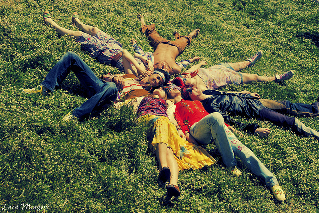
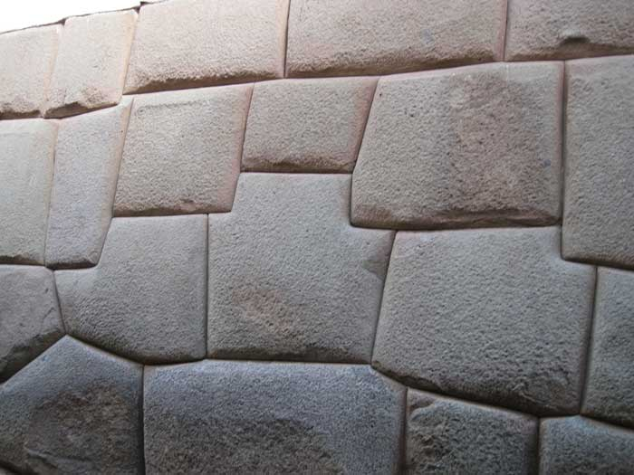
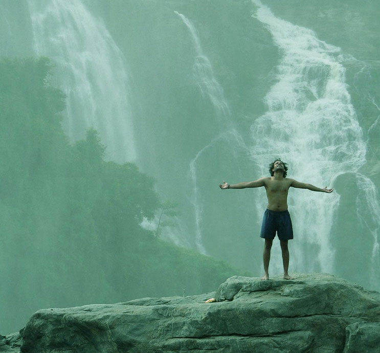
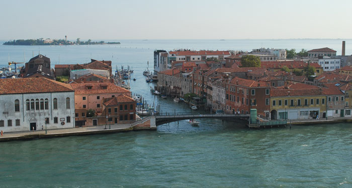
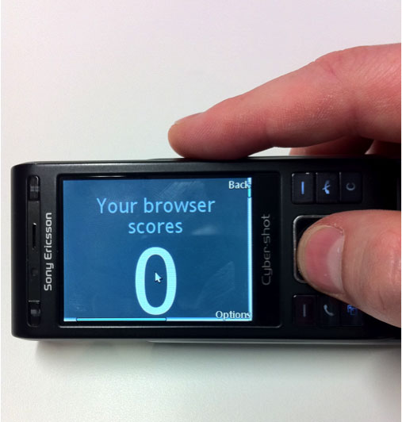
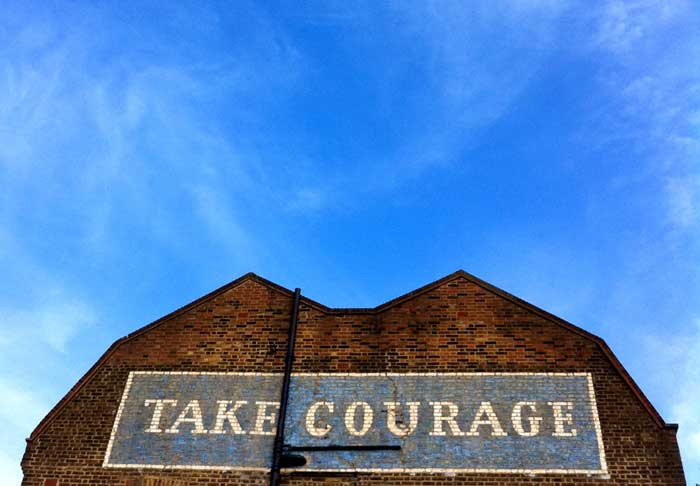

"Responsive Web Design, Mobile First y
- Quién soy?
Leo Lanese. Web Developer
javaScript, HTML5 and CSS
- Sobre que hablaremos?
Hablaremos sobre unas nuevas ideas, y como estas cambiarán el modo en que trabajamos
@leolaneseltd
Web en Terminal (Ej. lynx)
Web Telefonos Mobiles
Tablet Web & Laptop Web
Web en Desktop
Web en TV
Web en autos, Web en la cocina, Web el anteojos ... !
✓
✓
✓
✓
✓
✓
http://www.flickr.com/photos/11136492@N02/3721448864
a más dispositivos.. más recursos y tiempo ...
realmente necesitamos un cambio!
Pensemos en una única web!
Una Web capaz de fluir a través de todas las plataformas, dispositivos y marcas existentes y por venir
Solo una Web, un proyecto y un team desarrollándolo
 http://www.flickr.com/photos/misterno/5787984204
No hay diferentes Webs!
SOLO HAY UNA UNICA WEB!
"Web sites sera una de las muchas interfaces que usaremos para interactuar con el servicio",- @yiibu
http://www.flickr.com/photos/generalnoir/391009102Los Componentes son:
1- Un flexible layout basado
en cuadrículas (flexible grid)
Ej: Unidades relativas para el tamaño de los fonts
Ej: 960px Redes flexibles
2- Imágenes y media flexibles
Ej: max-width Flexible imagenes ... es un hack?
Ej: BBC News responsive images (C/S size)
Ej: W3C propuesta Responsive images (C size)
3- media queries
Ej: media queries
Ej: media queries aplicadas
...los términos 'mobile' y 'tablet' son tan amplios que son de poca ayuda para la describir de lo que estamos tratando de hacer",-@beep
"...si queremos estar más preparados para el futuro Responsive Design, necesitaremos dejar de pensar en términos como '320px', '480px', '768px' o lo que sea...",- @RWD
http://www.flickr.com/photos/meetrajesh/6972883401/-
Para crear una Unica y mejor "user-experience", necesitamos comenzar creando nuestro contenido desde el diseño y funcionalidad más simples, asegurándonos que funcionará en cualquier entorno
-
Luego necesitamos agregar sobre esto las variaciones al contenido usando 'media-queries'
-
Usar CSS media query y declarar 'display:none' a un elemento que contiene una 'background image' no evitará que la descarguemos. Solución: display:none; al elemento padre
-
Usar CSS media query y sobreescribir una 'background image' no evitará que descarguemos ambos. Solución: declarar los 'backgrounds' en los media queries
"Ten tu contenido listo para ir a cualquier lugar porque va a ir a todas partes",- @brad_frost
 http://www.flickr.com/photos/rosh/246187583/
como el agua.
Bruce_Lee and @DrummerHead
Trabajamos con tecnologias de vanguardia que cambian constantemente
PE nos da la posibilidad de detectar las capacidades del entorno y adaptarnos progresivamente
'Progressive Enhancement' genera 'Progressive user-experiences'
http://www.flickr.com/photos/ntr23/187248039Ej: border IE and WebKit
 http://www.flickr.com/photos/treehouse1977/496088319/
http://www.flickr.com/photos/treehouse1977/496088319/
jQuery hasClass jQuery hasClass
pure js matchMedia pure js matchMedia
CSS media queries CSS media queries
Trabajar con fallbacks ó el Modo de emulación (polyfills)
CHROME 18
<html class="js flexbox flexbox-legacy canvas canvastext webgl no-touch geolocation
postmessage websqldatabase indexeddb hashchange history
draganddrop websockets rgba hsla multiplebgs backgroundsize
borderimage borderradius boxshadow textshadow opacity
cssanimations csscolumns cssgradients cssreflections csstransforms
csstransforms3d csstransitions fontface generatedcontent video
audio localstorage sessionstorage webworkers applicationcache
svg inlinesvg smil svgclippaths cookies cssresize cssscrollbar
no-devicemotion deviceorientation fullscreen json">
IE 8
<html class="js no-flexbox canvas canvastext no-webgl no-touch geolocation postmessage
no-websqldatabase no-indexeddb hashchange no-history draganddrop no-websockets
rgba hsla multiplebgs backgroundsize no-borderimage borderradius boxshadow
no-textshadow opacity no-cssanimations no-csscolumns no-cssgradients
no-cssreflections csstransforms no-csstransforms3d no-csstransitions
fontface generatedcontent video audio localstorage sessionstorage no-webworkers
no-applicationcache no-svg inlinesvg smil svgclippaths">
Mzr
js or not js?
capacidades del dispositivos html5test ringmark canIuse
Modernizr svg fallback .svg
yepNope + Modernizr yepNope + Modernizr
Pollyfills a la carta www.html5please.com
Caso de estudio: bostonglobe.com (2010) bostonglobe.com (NOW)
